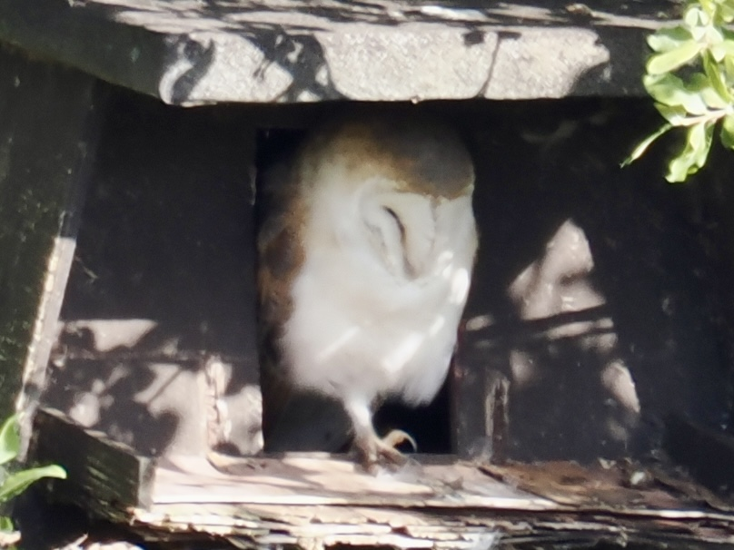
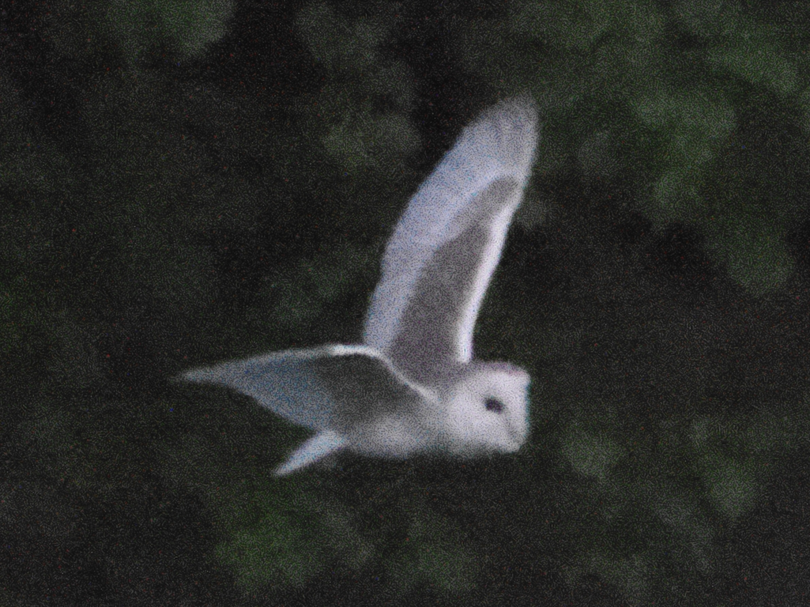

Western Barn Owl
Tyto alba
Order: Strigiformes
Family: Tytonidae

A white potato bird with crispy brown "skin". Crepuscular, rests during the day. This one is a regular at this box. Unbelievably cute but also unbelievably silent, almost impossible to find without the guidance of reserve volunteers.

One might find a white ghost circling above fields at dusk, and it might just be a Barn Owl.